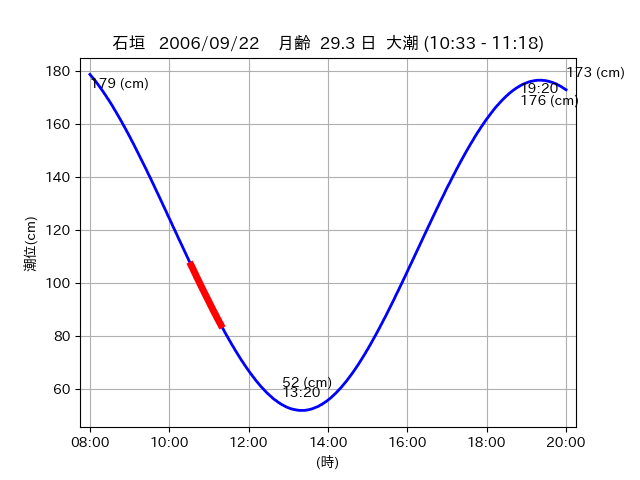
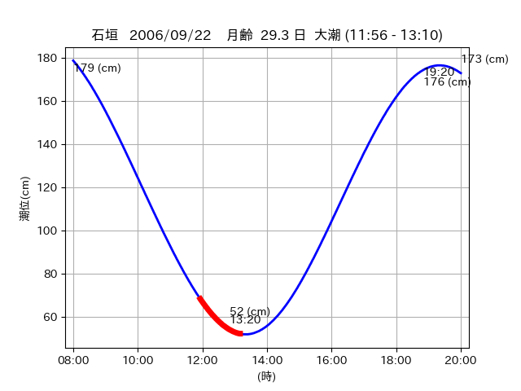

<!DOCTYPE html>
<html>
<head>
    
    <meta http-equiv="content-type" content="text/html; charset=UTF-8" />
    
        <script>
            L_NO_TOUCH = false;
            L_DISABLE_3D = false;
        </script>
    
    <style>html, body {width: 100%;height: 100%;margin: 0;padding: 0;}</style>
    <style>#map {position:absolute;top:0;bottom:0;right:0;left:0;}</style>
    <script src="https://cdn.jsdelivr.net/npm/leaflet@1.9.3/dist/leaflet.js"></script>
    <script src="https://code.jquery.com/jquery-3.7.1.min.js"></script>
    <script src="https://cdn.jsdelivr.net/npm/bootstrap@5.2.2/dist/js/bootstrap.bundle.min.js"></script>
    <script src="https://cdnjs.cloudflare.com/ajax/libs/Leaflet.awesome-markers/2.0.2/leaflet.awesome-markers.js"></script>
    <link rel="stylesheet" href="https://cdn.jsdelivr.net/npm/leaflet@1.9.3/dist/leaflet.css"/>
    <link rel="stylesheet" href="https://cdn.jsdelivr.net/npm/bootstrap@5.2.2/dist/css/bootstrap.min.css"/>
    <link rel="stylesheet" href="https://netdna.bootstrapcdn.com/bootstrap/3.0.0/css/bootstrap-glyphicons.css"/>
    <link rel="stylesheet" href="https://cdn.jsdelivr.net/npm/@fortawesome/fontawesome-free@6.2.0/css/all.min.css"/>
    <link rel="stylesheet" href="https://cdnjs.cloudflare.com/ajax/libs/Leaflet.awesome-markers/2.0.2/leaflet.awesome-markers.css"/>
    <link rel="stylesheet" href="https://cdn.jsdelivr.net/gh/python-visualization/folium/folium/templates/leaflet.awesome.rotate.min.css"/>
    
            <meta name="viewport" content="width=device-width,
                initial-scale=1.0, maximum-scale=1.0, user-scalable=no" />
            <style>
                #map_25c4aec07730795c89fcd706824d1f0d {
                    position: relative;
                    width: 2048.0px;
                    height: 1600.0px;
                    left: 0.0%;
                    top: 0.0%;
                }
                .leaflet-container { font-size: 1rem; }
            </style>
        
</head>
<body>
    
    
            <div class="folium-map" id="map_25c4aec07730795c89fcd706824d1f0d" ></div>
        
</body>
<script>
    
    
            var map_25c4aec07730795c89fcd706824d1f0d = L.map(
                "map_25c4aec07730795c89fcd706824d1f0d",
                {
                    center: [24.05, 123.746],
                    crs: L.CRS.EPSG3857,
                    ...{
  "zoom": 12,
  "zoomControl": true,
  "preferCanvas": false,
}

                }
            );

            

        
    
            var tile_layer_cdfa80b51367ab1d028b38c3e48a1710 = L.tileLayer(
                "https://cyberjapandata.gsi.go.jp/xyz/seamlessphoto/{z}/{x}/{y}.jpg",
                {
  "minZoom": 0,
  "maxZoom": 18,
  "maxNativeZoom": 18,
  "noWrap": false,
  "attribution": "\u5730\u7406\u9662\u5730\u56f3",
  "subdomains": "abc",
  "detectRetina": false,
  "tms": false,
  "opacity": 1,
}

            );
        
    
            tile_layer_cdfa80b51367ab1d028b38c3e48a1710.addTo(map_25c4aec07730795c89fcd706824d1f0d);
        
    
            var marker_9df856f2b69a909c7ae45c0ff11f026c = L.marker(
                [24.0738, 123.7551],
                {
}
            ).addTo(map_25c4aec07730795c89fcd706824d1f0d);
        
    
            var icon_0e01e38f6690ca50d28e7464eb863100 = L.AwesomeMarkers.icon(
                {
  "markerColor": "orange",
  "iconColor": "white",
  "icon": "info-sign",
  "prefix": "glyphicon",
  "extraClasses": "fa-rotate-0",
}
            );
        
    
        var popup_70a530602ad87ac95dc2bd07af3e0f8c = L.popup({
  "maxWidth": "100%",
});

        
            
                var html_567b789bf6f14f756371e0ed598f6c2e = $(`<div id="html_567b789bf6f14f756371e0ed598f6c2e" style="width: 100.0%; height: 100.0%;"><table><tr><td></td></tr><tr><td><center>20060922 No.1 </center></table></td></tr></table</div>`)[0];
                popup_70a530602ad87ac95dc2bd07af3e0f8c.setContent(html_567b789bf6f14f756371e0ed598f6c2e);
            
        

        marker_9df856f2b69a909c7ae45c0ff11f026c.bindPopup(popup_70a530602ad87ac95dc2bd07af3e0f8c)
        ;

        
    
    
                marker_9df856f2b69a909c7ae45c0ff11f026c.setIcon(icon_0e01e38f6690ca50d28e7464eb863100);
            
    
            var poly_line_d3eb01afb3362df93290606e29f13aa2 = L.polyline(
                [[24.0738, 123.7551], [24.071, 123.75]],
                {"bubblingMouseEvents": true, "color": "#00FFFF", "dashArray": null, "dashOffset": null, "fill": false, "fillColor": "#00FFFF", "fillOpacity": 0.2, "fillRule": "evenodd", "lineCap": "round", "lineJoin": "round", "noClip": false, "opacity": 1.0, "smoothFactor": 1.0, "stroke": true, "weight": 3}
            ).addTo(map_25c4aec07730795c89fcd706824d1f0d);
        
    
            var marker_20d11f5019209876356c84e1bcca9512 = L.marker(
                [24.0516, 123.7427],
                {
}
            ).addTo(map_25c4aec07730795c89fcd706824d1f0d);
        
    
            var icon_a507423e7a979a013c720da851d68b12 = L.AwesomeMarkers.icon(
                {
  "markerColor": "orange",
  "iconColor": "white",
  "icon": "info-sign",
  "prefix": "glyphicon",
  "extraClasses": "fa-rotate-0",
}
            );
        
    
        var popup_987a685301af39442f875ec3dc7f7a4e = L.popup({
  "maxWidth": "100%",
});

        
            
                var html_0ba0e3cec97edd36a1d68e42c747f5ba = $(`<div id="html_0ba0e3cec97edd36a1d68e42c747f5ba" style="width: 100.0%; height: 100.0%;"><table><tr><td></td></tr><tr><td><center>20060922 No.2 </center></table></td></tr></table</div>`)[0];
                popup_987a685301af39442f875ec3dc7f7a4e.setContent(html_0ba0e3cec97edd36a1d68e42c747f5ba);
            
        

        marker_20d11f5019209876356c84e1bcca9512.bindPopup(popup_987a685301af39442f875ec3dc7f7a4e)
        ;

        
    
    
                marker_20d11f5019209876356c84e1bcca9512.setIcon(icon_a507423e7a979a013c720da851d68b12);
            
    
            var poly_line_1212c52bc306e136b0b3fec0603a5038 = L.polyline(
                [[24.0516, 123.7427], [24.0477, 123.7486]],
                {"bubblingMouseEvents": true, "color": "#00FFFF", "dashArray": null, "dashOffset": null, "fill": false, "fillColor": "#00FFFF", "fillOpacity": 0.2, "fillRule": "evenodd", "lineCap": "round", "lineJoin": "round", "noClip": false, "opacity": 1.0, "smoothFactor": 1.0, "stroke": true, "weight": 3}
            ).addTo(map_25c4aec07730795c89fcd706824d1f0d);
        
    
            var marker_69d28bbb950897205b870bb18ad1944e = L.marker(
                [24.0476, 123.7484],
                {
}
            ).addTo(map_25c4aec07730795c89fcd706824d1f0d);
        
    
            var icon_5e7b008dfc04001fcabd2330f8c14e32 = L.AwesomeMarkers.icon(
                {
  "markerColor": "orange",
  "iconColor": "white",
  "icon": "info-sign",
  "prefix": "glyphicon",
  "extraClasses": "fa-rotate-0",
}
            );
        
    
        var popup_91c084d6684ee529d759ebbd01237e48 = L.popup({
  "maxWidth": "100%",
});

        
            
                var html_75397f184eca896dc8c53f11cdc3fb4f = $(`<div id="html_75397f184eca896dc8c53f11cdc3fb4f" style="width: 100.0%; height: 100.0%;"><table><tr><td></td></tr><tr><td><center>20060922 No.3 </center></table></td></tr></table</div>`)[0];
                popup_91c084d6684ee529d759ebbd01237e48.setContent(html_75397f184eca896dc8c53f11cdc3fb4f);
            
        

        marker_69d28bbb950897205b870bb18ad1944e.bindPopup(popup_91c084d6684ee529d759ebbd01237e48)
        ;

        
    
    
                marker_69d28bbb950897205b870bb18ad1944e.setIcon(icon_5e7b008dfc04001fcabd2330f8c14e32);
            
    
            var poly_line_0025630f18515d97edd90d9a16372e8d = L.polyline(
                [[24.0476, 123.7484], [24.0523, 123.7446]],
                {"bubblingMouseEvents": true, "color": "#FF00FF", "dashArray": null, "dashOffset": null, "fill": false, "fillColor": "#FF00FF", "fillOpacity": 0.2, "fillRule": "evenodd", "lineCap": "round", "lineJoin": "round", "noClip": false, "opacity": 1.0, "smoothFactor": 1.0, "stroke": true, "weight": 3}
            ).addTo(map_25c4aec07730795c89fcd706824d1f0d);
        
</script>
</html>